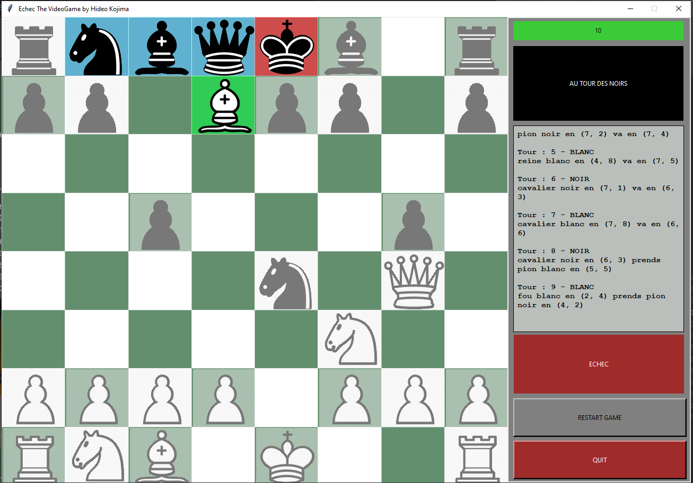

Projet de fin de Semestre 1. Il s'agit simplement d'un jeu d'échec en Python.
Mais ce qui le différencie de mes autres projets cette fois-ci. C'est déjà le
temps fourni
(Environ 150h). Mais surtout la comparaison avec ce qui été
attendu.

Il était demandé un simple jeu d'échec en tour par tour sans IA et sans interface
graphique.
J'ai fait les 2, seul, au lieu d'à plusieurs
Je m'y connaissais déjà en Python (
Puisqu'ayant déjà fait Spooky Mansion, des
scripts pythons, etc.) mais j'ai dû utiliser des librairies comme
Tkinter que j'ai donc
dû apprendre. Le plus difficile cependant fut la conception de l'IA et des coups.
Rendre chaque pièce à tout instant consciente de son environnement, lui permettre de
suggérer des coups à jouer, déterminer quelle pièce pourrait être un danger à l'avance, etc.
M'a demandé un effort de reflexion nouveau pour moi. D'autant plus que tous les algorithmes
de pathfinding dont j'avais besoin était au programme du semestre suivant. J'ai donc dû
soit les découvrir par moi-même, soit trouver une solution seul.